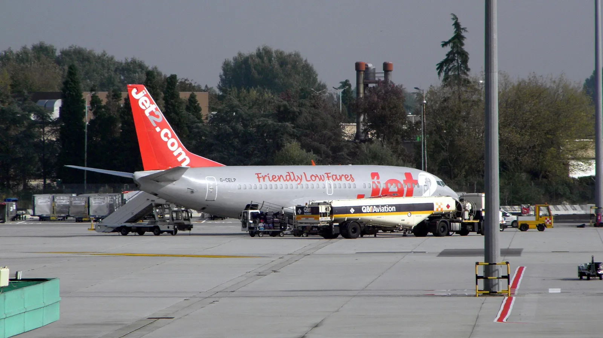
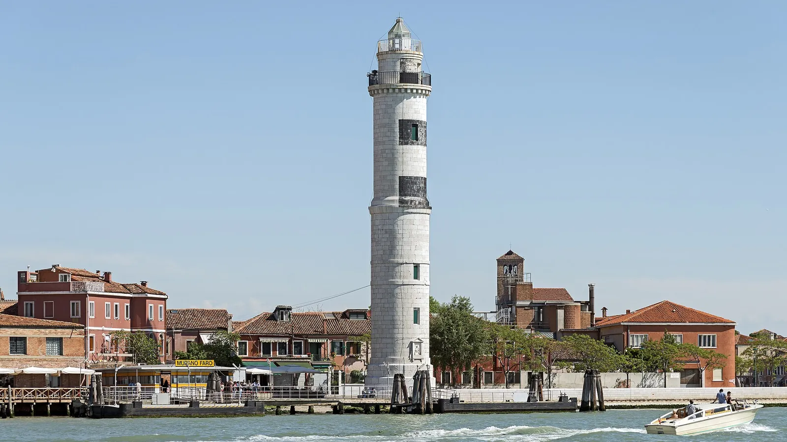
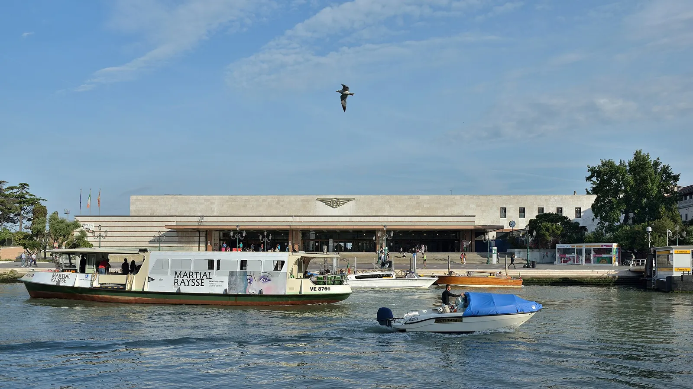
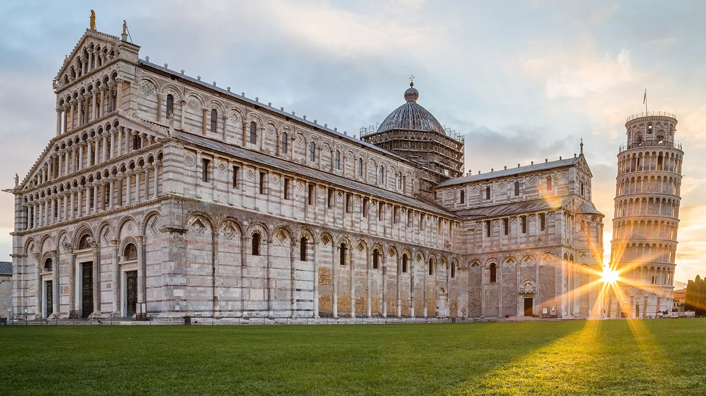
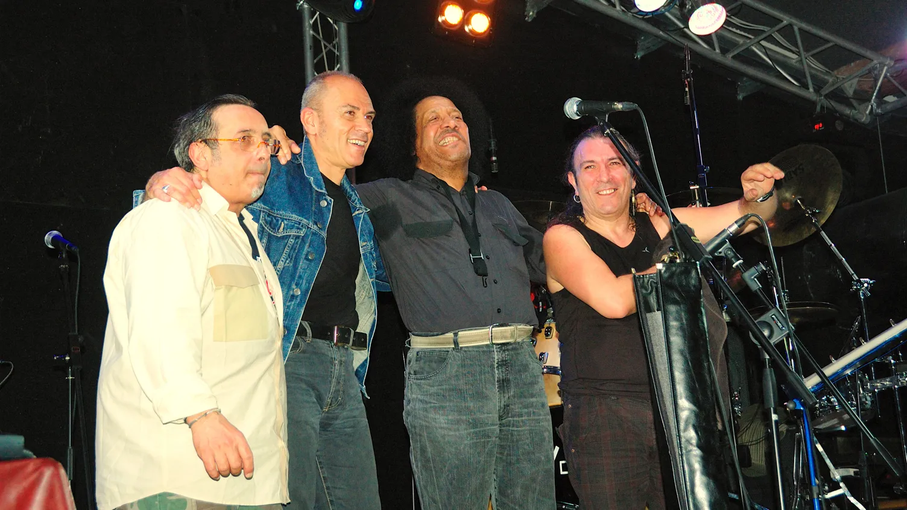
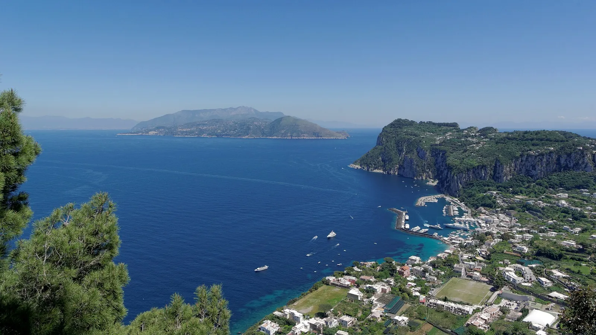
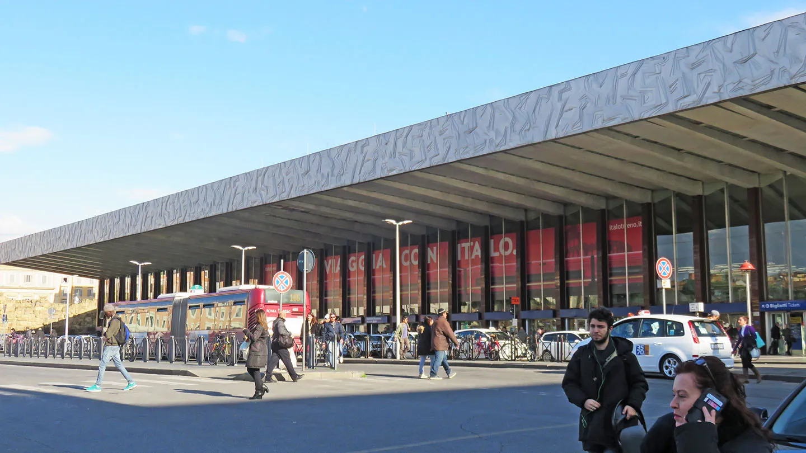
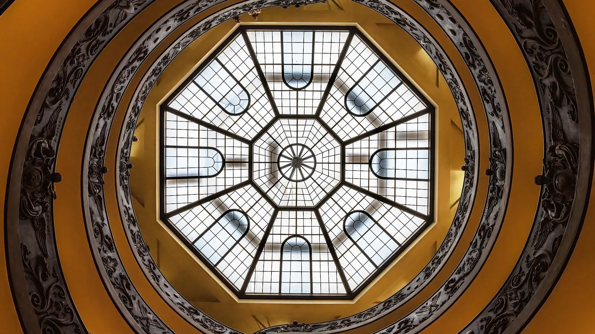
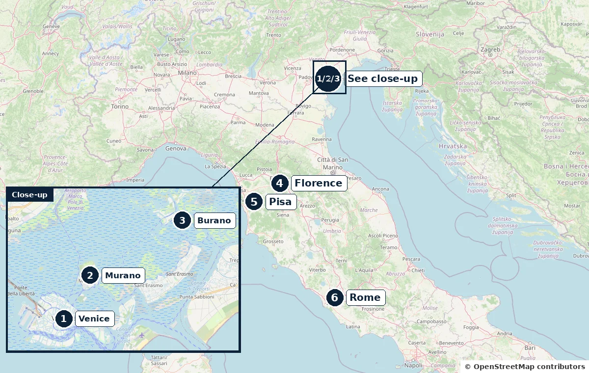

The classic Italy circuit by high-speed train. Venice with a gondola ride and the islands of Murano and Burano, Florence with a day trip to Pisa, Naples with a day on the island of Capri, and Rome's ancient sights and the Vatican Museums. Every train ride is between 1 and 3 hours, and each city has two nights.
See it for yourself
Photos from the journey









Where you go
The journey on one map

Day by day, in short
Daily travel brief
Distances are by road for the whole day. The full plan with timings comes with your detailed itinerary.
-
1
Arrive in Venice and a gondola ride
- Into Venice: venice charges an access fee to day visitors on peak days.
- Pack light: Venice has bridges with steps everywhere and no cars.
-
2
-
3
Train to Florence
Firenze Santa Maria Novella Duomo di Firenze
- Climbing the Duomo dome is by timed ticket only.
- The Uffizi and Accademia (David) need timed tickets; we can add them.
-
4
Pisa
- Square of Miracles: climbing the tower needs a timed ticket; children under 8 are not allowed up.
- Evening option: the sunset view from Piazzale Michelangelo in Florence.
-
5
-
6
Capri and Anacapri
- Blue Grotto: the grotto closes when the sea is rough; this cannot be booked in advance.
- Take seasickness tablets if you need them; the crossing can be choppy.
-
7
Train to Rome and a city tour
Piazza del Campidoglio Basilica di San Paolo fuori le Mura
- The Colosseum from outside: inside visits need a timed ticket.
- Throw a coin in the Trevi Fountain at night when it is quieter.
-
8
The Vatican Museums and the Sistine Chapel
- Vatican Museums: closed on Sundays except the last Sunday of the month.
- Vatican Museums: shoulders and knees covered in the Sistine Chapel and St Peter's.
-
9
Fly home from Rome
- Train or car to Fiumicino: be at the airport 3 hours before an international flight.
- Ask for a VAT refund form when shopping over the minimum amount.
Local know-how
Travel hacks from our desk
Hotel deposit
Use a credit card for the deposit or pre-authorisation at check-in, never a forex or debit card. Forex cards cannot hold funds, many hotels refuse them, and a credit-card hold is released faster.
Cards and cash
On card machines, always choose to pay in euros, never in INR. Cards work almost everywhere. Carry about EUR 50 in cash for small cafés, toilets and markets.
Pickpockets
Busy stations, trams and squares are pickpocket hotspots. Keep passports in the hotel safe, carry a copy, and wear your bag in front in crowds.
Plugs, water and meal times
Plugs are the two round-pin type C and F at 230 volts (Switzerland uses type J; a type C plug fits). Tap water is safe to drink. Lunch is about 12:00 to 14:00 and dinner from about 18:30.
When to go
Best time to visit for this journey
May, June or September.
April to June and September to October: warm, with all Capri boats running and fewer crowds than summer.
The package
What's included
Included
- 8 nights with breakfast
- Fast train tickets
- Gondola ride
- Venice islands boat tour
- Pisa guided tour
- Capri day trip
- Rome city tour and Vatican Museums tour
- 24/7 support from Blue Diamond Voyage
Not included
- International flights
- Schengen visa
- Blue Grotto boats and other entries not listed
- Lunches and dinners
- Travel insurance
- City taxes paid at hotels
The detailed itinerary
Some journeys are planned. Ours are crafted.
The full 9-day plan is ready: hour-by-hour timings, drive times, temple dress codes, food for your diet and a route map for every day. Tell us your dates and your city, and we'll send it to you on WhatsApp, shaped around you.
- Hour-by-hour timings
- A route map for every day
- Hotel and room details
- Visa and entry steps
- Vegetarian and Jain dining
24/7 travel desk+91 97148 59797+91 98242 21400
Photo and map credits
- Venice Marco Polo Airport: Threecharlie, CC BY-SA 3.0, via Wikimedia Commons
- Murano: Didier Descouens, CC BY-SA 4.0, via Wikimedia Commons
- Venezia Santa Lucia: This Photo was taken by Wolfgang Moroder. Feel free to use my photos, but please, CC BY-SA 3.0, via Wikimedia Commons
- Leaning Tower of Pisa: MHoser, CC BY-SA 4.0, via Wikimedia Commons
- Napoli Centrale: roberto scorta, CC BY 2.0, via Wikimedia Commons
- Marina Grande Capri: Berthold Werner, CC BY-SA 3.0, via Wikimedia Commons
- Roma Termini: Hide1228, CC BY-SA 4.0, via Wikimedia Commons
- Vatican Museums: Wilfredor, CC0, via Wikimedia Commons
- Roma Termini: Hide1228, CC BY-SA 4.0, via Wikimedia Commons
- Maps: © OpenStreetMap contributors; road routes by OSRM.